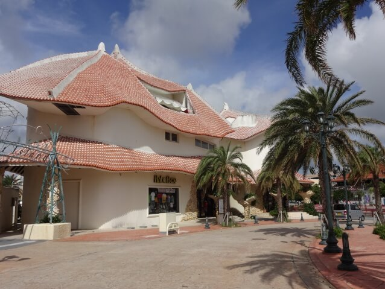
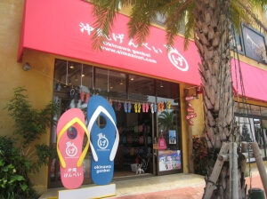
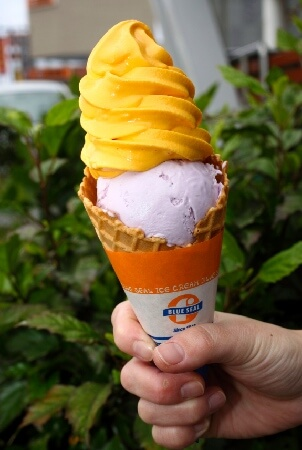

HabuBox
HabuBox」は沖縄Tシャツの先駆的ブランド。 沖縄をモチーフに、紅型風のもの・ユニークなものがたくさんあります。

沖縄げんべい
島ぞうり(ビーチサンダル)専門店。サンダルと鼻緒、色が自由に選べ、その組み合わせは200通り以上！ 好みのデザインや名前をレーザー彫刻で入れられるオプションサービスなどから選ぶと、30分ほどで自分だけの島ぞうりのできあがり。

ブルーシール
沖縄のアイスクリームといえば「ブルーシール」と言われるほど人気のアイスクリーム屋さん。 アメリカ生まれ沖縄育ちのブルーシールは、沖縄の気候風土に合った爽やかな味わいが特徴。 このデポアイランド店ではアイスはもちろん、豊富なタピオカドリンクも人気。 テラス席からは目の前に観覧車が見え、夜景も感動的です。